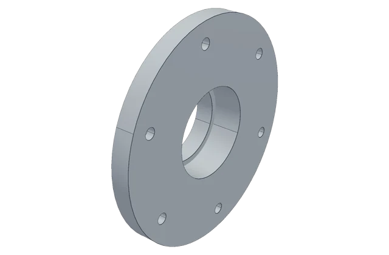
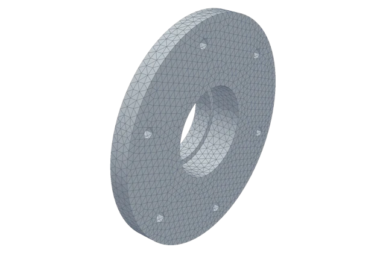
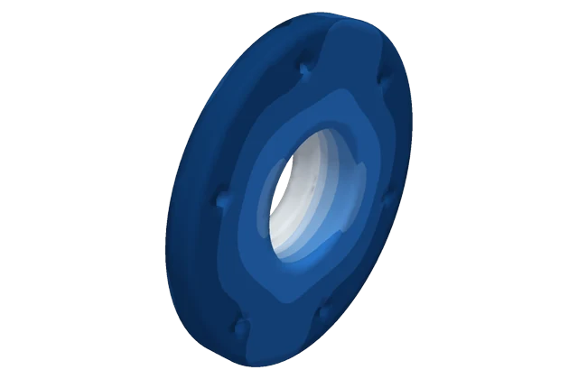

CAD
The shape
A 3D model of a part, like the file an engineer sends to a 3D printer or a machine shop. We use the STEP format, which any CAD program can open.
Benchmark · version 1.9 · October 2026
Each task gives an AI model a real part: a 3D CAD file or a written description, the material, how the part is held and how it is loaded. The model writes one program that meshes the part, runs a finite-element simulation and reports what an engineer needs to know: how far it bends, when it buckles, how fast it vibrates, how hot it gets. We run that program offline and check every number against a trusted answer.
Task BT-plate-07: a 250 × 125 × 2.5 mm steel plate in its first buckling shape.
The parts
Every family of tasks is built around real CAD. These are some of the parts the model has to analyse. Click one to see its tasks.
How it works
CAD
A 3D model of a part, like the file an engineer sends to a 3D printer or a machine shop. We use the STEP format, which any CAD program can open.
FEM
The finite element method cuts the shape into thousands of tiny pieces (a mesh) and solves the physics on every piece. It is how engineers check a part before anyone builds it.
Reference
Each task has an answer the model never sees: from a published paper, an official test suite or the part's maker, or computed by us and checked on three meshes.
Example · BT-plate-07
A thin steel plate, 250 mm long, 125 mm wide and 2.5 mm thick. One short end is clamped. The long edges are held so they cannot move up or down, but they can slide.
Someone pushes on the free end, along the length of the plate, with a pressure of 463 MPa.
By what factor does that push have to change before the plate suddenly bows out sideways (buckles)?
main.py, that reads the CAD, meshes it, runs the solver and writes the results.What a run looks like, step by step. These pictures come from GPT-6 Astra's own run on task A-CYC-FlangeP1, the output flange of the 3D-printed gearbox, which it passed.



Why this one is a trap. The push is deliberately larger than the plate can take, so the true answer is below 1. The free solver most models reach for, CalculiX 2.23, can silently skip answers below about 1 and print the next one up. A model that checks its result (for example with a hand formula) catches it. A model that trusts the solver reports a number that can be several times too high.
Tasks
Tasks come in families: the same kind of part or problem with different shapes, sizes or loads. Open any task to see what the model gets, what it must report, where the answer comes from and the exact prompt.
Scoring
Getting a number right is not enough on its own. A model could guess or copy a known answer, so the files behind the number are checked too.
1 · Numbers
Every requested value is a real number inside its pass band. Bands are usually 5 % or 10 %; values read off a published colour plot get 20 %.
2 · Files
The program, the exported shape, the mesh, the result fields, the solver log, a refinement record and the software versions must all be there.
3 · Shape
When the model builds the CAD itself, its shape must match ours: same number of solids, volume within 2 %, surfaces within 0.5 mm.
4 · Review
A reviewer who does not know which model wrote the code signs off the supports, loads, mesh and convergence against the file hashes.
A task passes only when the numbers are right and the review signs off. Results are reported separately for tasks that give the CAD and tasks that need the model to build it, and runs with tools or feedback are reported apart from single-shot runs.
Results
| Rank | Model | Setup | Tasks passed | Cost |
|---|---|---|---|---|
| No model has been run on all 217 tasks yet. Full runs will appear here, one row per model and setup, with a 95 % interval and the cost. | ||||
One try per task, no tools, no feedback. We picked these tasks to look for failures, so read the counts as a map of where it breaks, not as a score.
wrong number, unchecked
The setup was right, but it trusted the solver's first printed answer, which was a skipped buckling mode.
its own code failed
Mesh errors, file-format mistakes, a crash in its own post-processing. No answer came out.
refused to answer
Its own equilibrium check failed, so it declined to report a collapse load.
Every failure was checked: when the fault turned out to be ours (a wrong prompt detail, a reference from a simpler model, a drawing that was never attached), the task is marked as a known problem and not counted against the model. Full evidence for all 51 failures is in the failure dataset.
Run it
Give the model only the task inputs, replay its program in the sandbox and score it. Every model you compare must get the same software, the same inputs and the same limits.
Download the benchmark (2.9 GB).
hf download Conditiondark/cadfem-bench --repo-type dataset --local-dir cadfem-bench cd cadfem-bench/cadfem-bench-v1.9
Export what the model may see. This copies only the model-visible task files; the answers stay behind.
python evaluator/export_run.py --package . --out ../model-inputs --model-id YOUR_EXACT_MODEL_ID --run-id trial-001
Have your model write main.py for each task, then replay it once in the sandbox.
python evaluator/sandbox_runner.py prepare --package . --job ../job-001 --task-id A-CYC-Coupler-PETGCF --submission ../submission --model-id YOUR_EXACT_MODEL_ID --run-id trial-001 python evaluator/sandbox_runner.py replay --package . --job ../job-001 --backend macos --python /path/to/trusted/python
Score the run.
python evaluator/score.py --refs evaluator/references.jsonl --tasks candidate/tasks.jsonl --submissions ../runs/model --run-id trial-001 --out ../score.json
Data
Full benchmark
All 217 tasks, CAD files, references and their evidence, the sandbox and the scorer. 3,221 files, every one checksummed.
huggingface.co/datasets/Conditiondark/cadfem-benchFailure study
The 51 tasks Astra failed every time, with its code, its solver files, our verdict and the rerun that confirms each wrong answer.
huggingface.co/datasets/Conditiondark/astra-cadfem-failuresLimits. The references are public, so a model trained after October 2026 may have seen them. 17 of the 64 main-set references have been reproduced independently, and most pass bands are still provisional. The buckling traps all test one solver behaviour.
Licences. Each task keeps its source's terms, listed with the task. Material made for this benchmark (the buckling traps, prompts, records and scripts) is CC BY 4.0.
Please keep these tasks and answers out of training data.